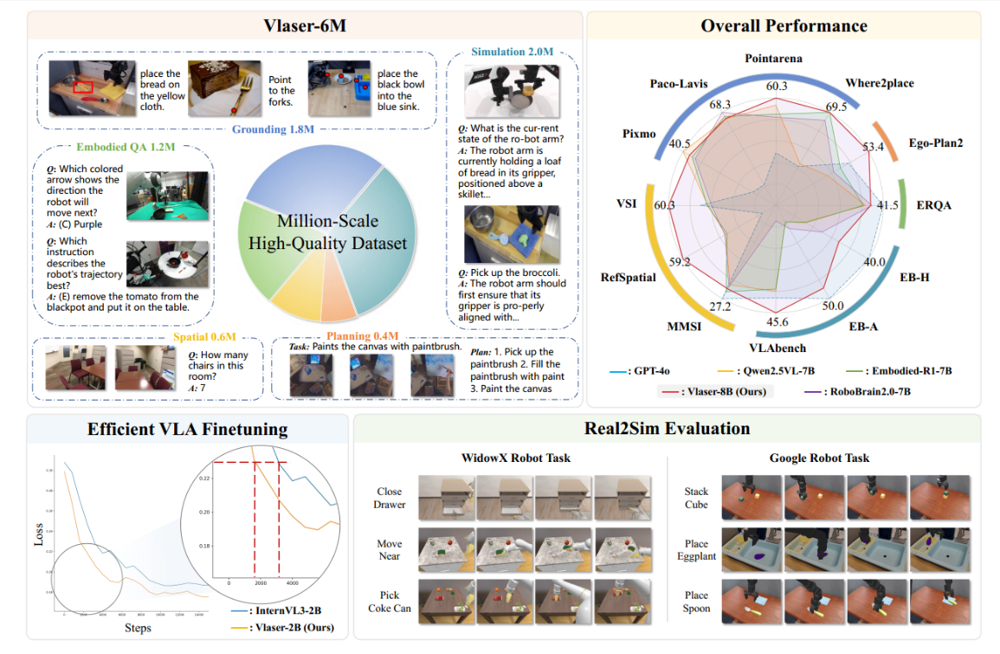
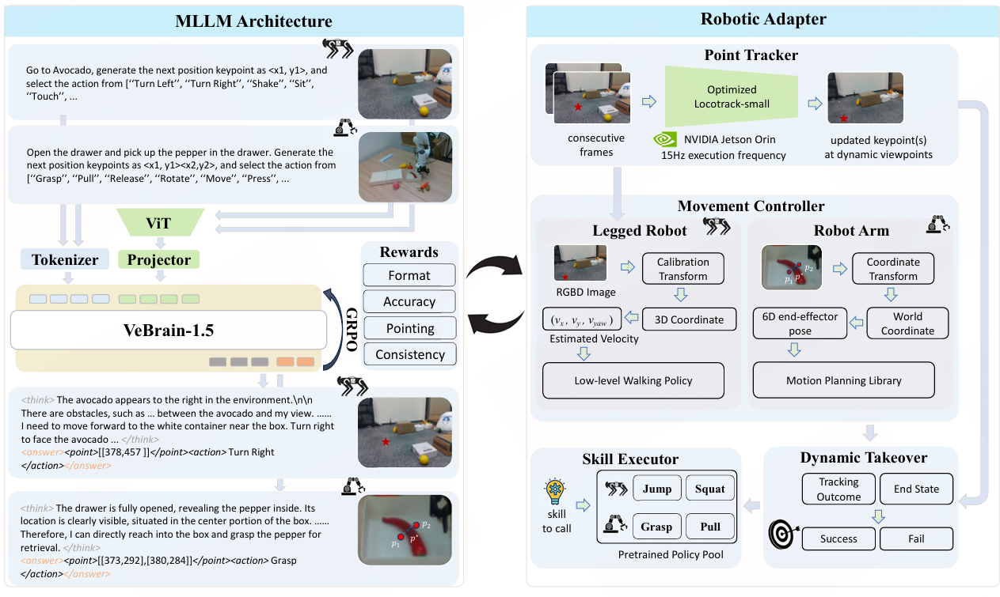
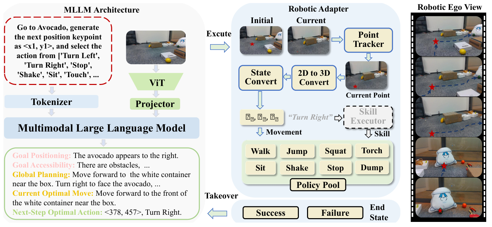

ICLR 2026 | [Paper] [GitHub] [Project Page]
Ganlin Yang*, Tianyi Zhang*, Haoran Hao*, Weiyun Wang, Yibin Liu, ..., Wenhai Wang, Yao Mu, Zhi Hou
Summary: VLASER introduces synergistic embodied reasoning to tightly couple scene understanding, instruction grounding, and action prediction for robust long-horizon manipulation.

IEEE TPAMI 2026 | [Paper]
Ganlin Yang, Gen Luo, Ziyang Gong, Guanzhou Chen, ..., Yu Qiao, Wenhai Wang, Xizhou Zhu, Jifeng Dai
Summary: VeBrain-1.5 extends the unified perception–reasoning–control framework with a shared MLLM decision interface, VeBrain-1M data, and offline RL with verifiable rewards, improving success on both legged robots and robotic arms.

Technical Report | [Paper] [GitHub]
Gen Luo*, Ganlin Yang*, Ziyang Gong*, Guanzhou Chen*, ..., Yu Qiao, Rongrong Ji, Xizhou Zhu
Summary: This work proposes a visual embodied brain paradigm that unifies perception, spatial reasoning, and control planning to improve generality across embodied tasks and environments.